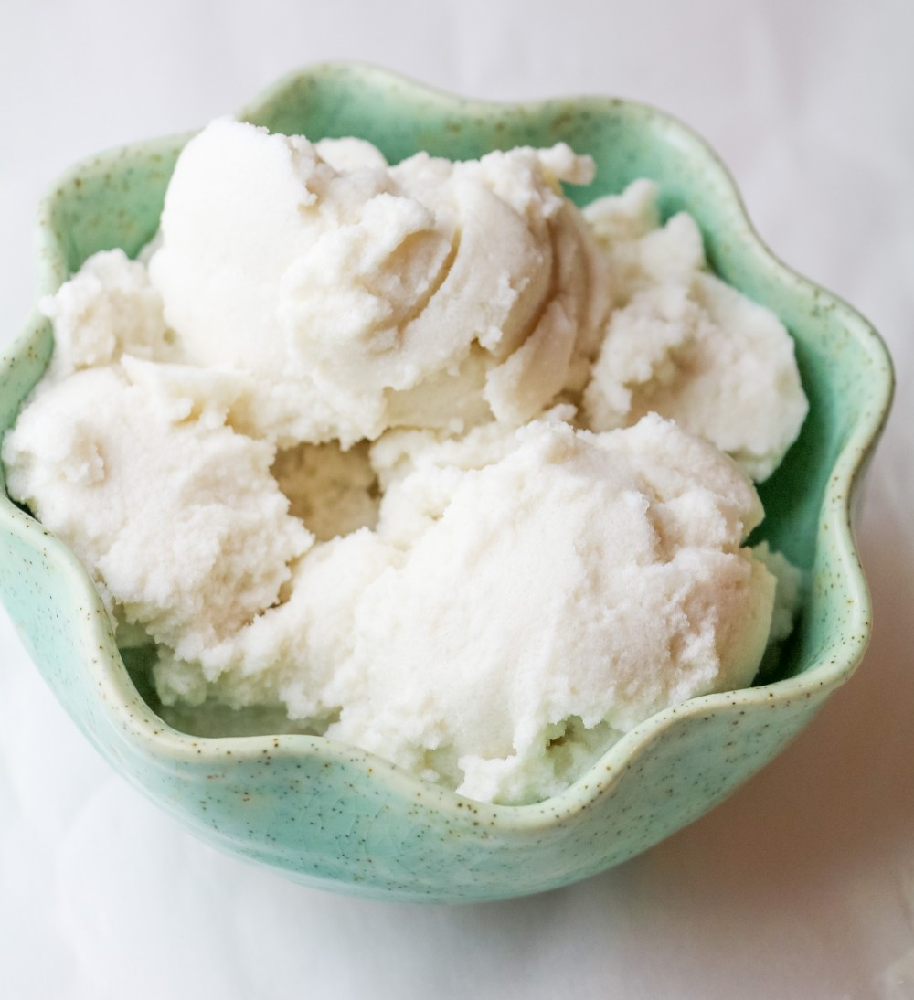

Healthy Vanilla Ice Cream

Delicious and healthy ice cream
If you are in mood for some delicious vanilla ice cream but
want to avoid adding the extra calories, you came to the right
place.
This recipe will be using 4 simple ingredients, an ice cube tray, and either a blender or a food processor. The great thing about this recipe, if you haven't noticed, is that
you won't need an ice cream maker!
Ingredients
- 1-3/4 cups Silk unsweetened Vanilla Almondmilk
- 1 teaspoon vanilla extract
- sweetener to taste (you can use powdered stevia or another equivalent)
- pinch sea salt
- ¼cup Silk Soy Creamer
Steps
- In a glass measuring cup, whisk together the Almondmilk, vanilla extract, sweetener, and salt.
Pour into an ice cube tray and stick it in the freezer until it is completely firmed up and frozen.
- Once the almond milk mixture is frozen, blend ina high-powered blender or food processor until it's almost at a powdered consistency.
Make sure not to go nuts and totally overblend, or it will melt. Add in creamer and process on high until incorporated and nearly smooth. Finally, throw in any add-in
and process until smooth. Devour!
Go back to Main Page